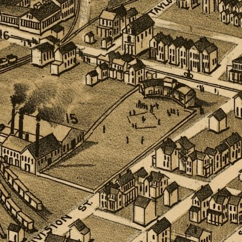

| New Castle, Pennsylvania - 1896 |
|---|
 |
| New Castle, Pennsylvania 1896.
Drawn by T. M. Fowler. Fowler, T. M. (Thaddeus Mortimer), 1842-1922. CREATED/PUBLISHED Morrisville, Pa. [1896] NOTES Perspective map not drawn to scale. Bird's-eye-view. "Published by T. M. Fowler & James B. Moyer." Indexed for points of interest. REFERENCE LC Panoramic maps (2nd ed.), 814 |